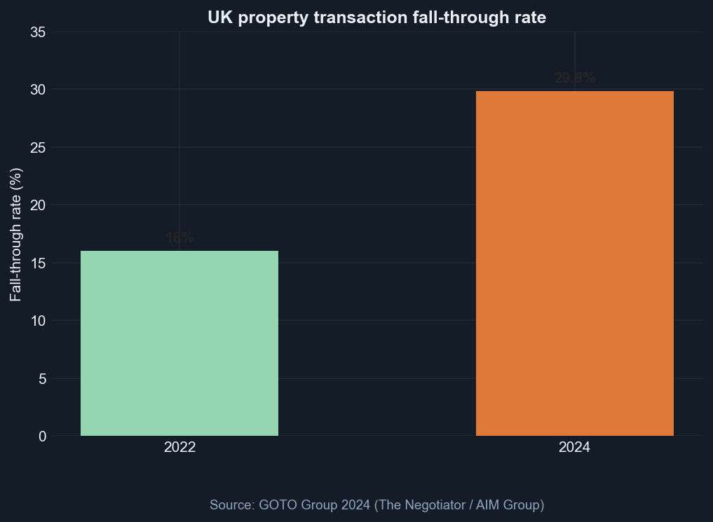
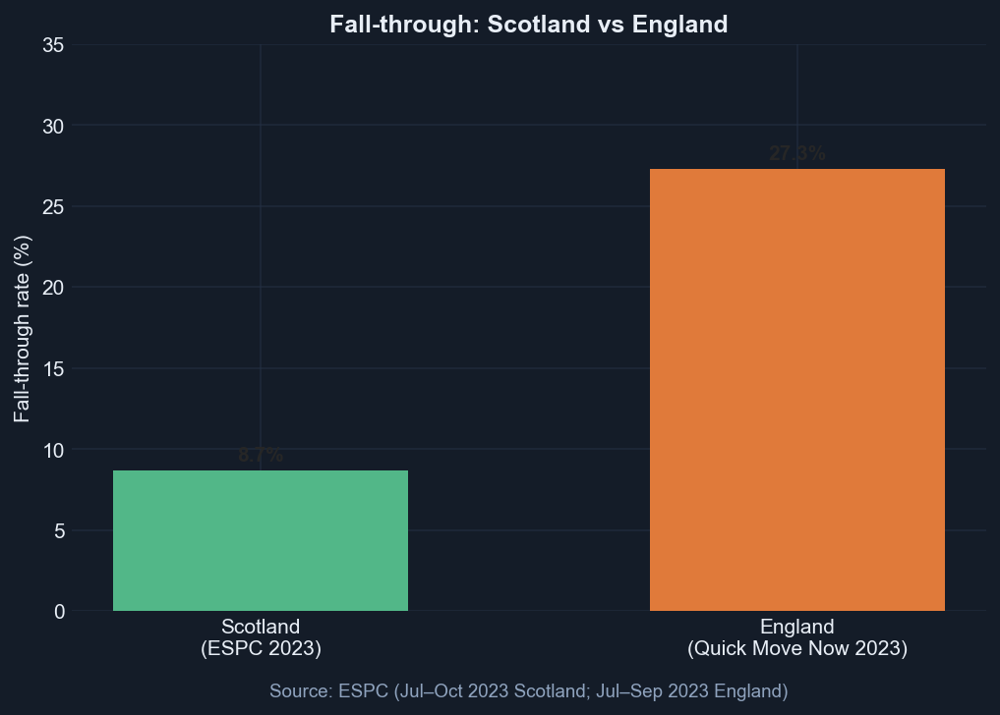
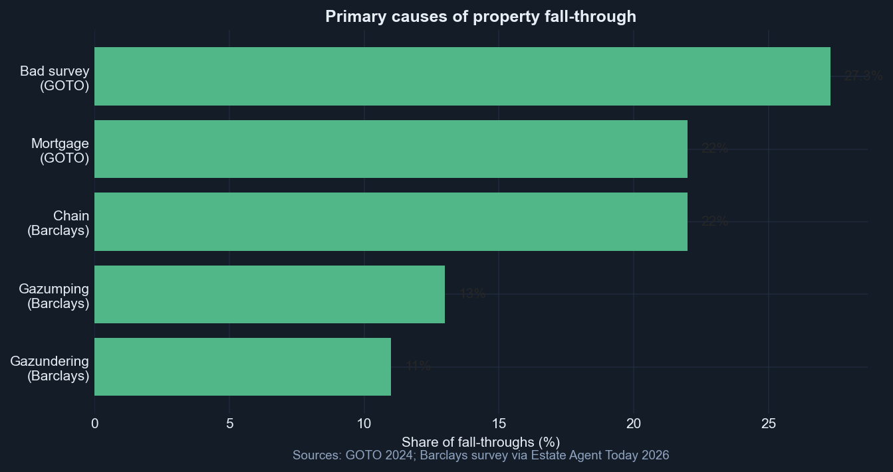
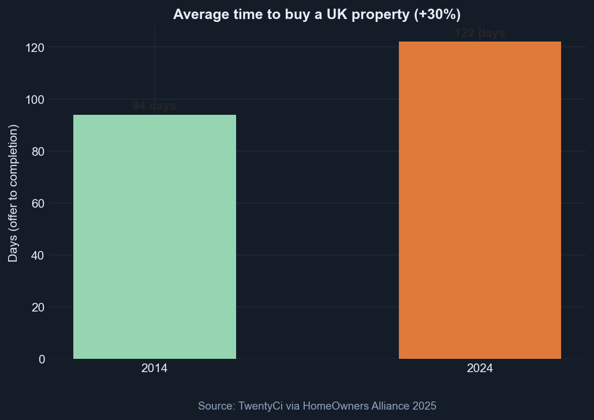
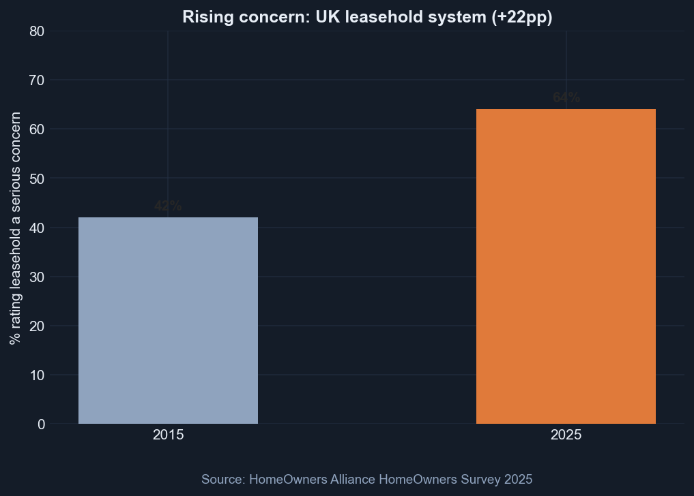
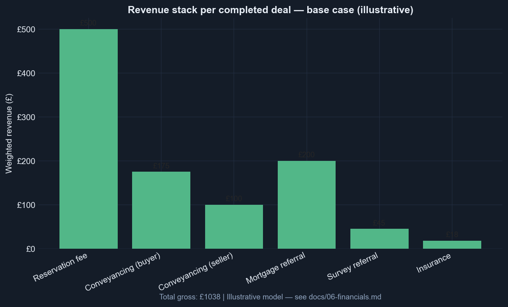
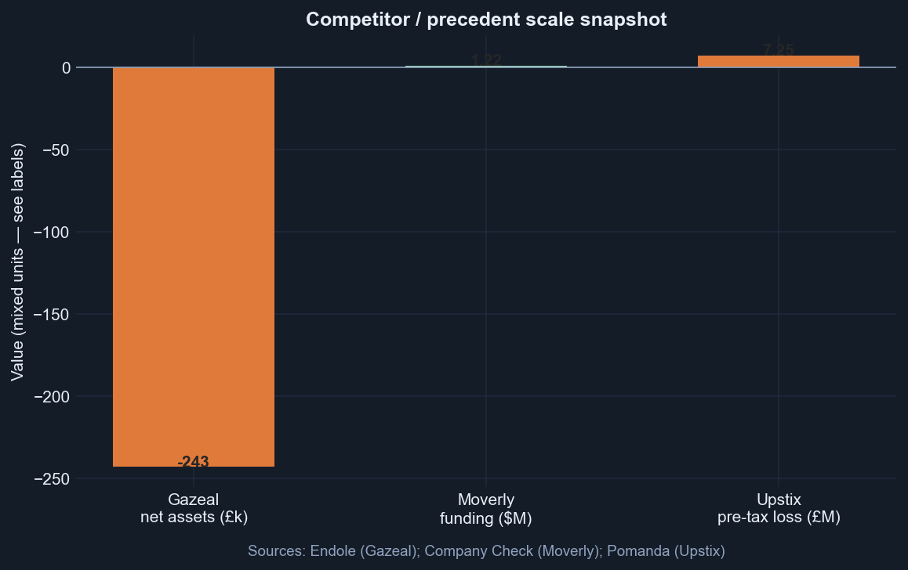

UK property · the certainty layer
Lockstep is the certainty layer for buying a home: verified facts before the first viewing, a reservation that actually holds, and one team from offer to keys. Sold through the agents who already own the relationship.
Lockstep is the certainty layer for buying a home.
In England and Wales, a sale isn't really a sale until the very last moment. Everything up to exchange is a polite "maybe", so buyers fall for a home, spend thousands chasing it, and still watch almost one in three agreed deals collapse. That isn't bad luck. It's a market that never asks anyone to commit.
We're changing what "yes" means. The facts about a home are checked and ready before the first viewing. When a buyer and seller agree, they sign a reservation that actually holds. And from offer to keys, one team keeps the move moving, instead of leaving it to hope and a chain of strangers.
We don't replace the estate agent. We give them the one promise they've never been able to make: certainty. So Lockstep goes to market through the people who already own the relationship, with every partner fee shown in plain sight.
Roughly one in three agreed sales in England and Wales never complete. The average purchase takes ~120 days. Only ≤2% of movers felt they had enough information before making an offer (Ministry of Housing, Communities and Local Government consultation). The wasted cost to the economy is ~£8.6 billion per year (GOTO Group).
We are not solving affordability (81% still cite it — HomeOwners Alliance 2025). Our wedge is certainty and information — fixable with product and process.
| Pain | Number | Source |
|---|---|---|
| Deals that die | 29.8% in 2024 | GOTO |
| Buyer burn per dead deal | ~£2,727 | GOTO |
| Scotland vs England fall-through | ~9% vs ~30% | ESPC |
Sale-ready and secured for England and Wales:
We orchestrate. We do not employ lawyers, employ surveyors, or buy houses.
Product surfaces: one shared platform, two doors (buyer portal and agent portal), one public shop window (shareable pack links on every listing that pull buyers in at near-zero customer acquisition cost).
| Line | Amount |
|---|---|
| Gross revenue per completed deal | ~£1,038 |
| Contribution margin per completed deal | ~£642–677 |
| Agent channel share | 30% of referral revenue (40% for founding partners, first 24 months) |
Detail: 03-economics.md.
Agents first. No consumer ad spend. (Emoov spent ~£150M for ~7% share — we are not repeating that.)
Agents adopt because Lockstep protects commission they have already earned (roughly a third of agreed sales collapse; each costs the agency ~£4,123 plus lost £3,000–6,000 commission), lets them co-own the product early (founding-partner programme), and costs nothing to switch on (free "Lockstep Ready" listing badge; rails are opt-in).
| Phase | Ship |
|---|---|
| 0 (wk 1–8) | Wizard-of-Oz with 1 founding-partner branch |
| 1 (mo 2–5) | Buyer portal + shareable pack links; 20–40 deals |
| 2 (mo 5–10) | Agent portal; regional density |
| 3–4 | Scale channel; chain tools later |
Detail: 05-go-to-market.md.
Detail: 04-competition-and-risk.md.
One agent. Five deals. Spreadsheet + DocuSign. Measure completion rate and attach.
If completion >70% and rails stick → build. If not → fix the manual playbook before writing code.
| Doc | Contents |
|---|---|
| 01-market-and-problem | Market size, problem clusters, Scotland proof point, regulatory tailwind |
| 02-product-and-mechanics | Product, two-layer model, flows, chain handling |
| 03-economics | Revenue model, unit economics, agent economics |
| 04-competition-and-risk | Competitors, precedents, risk register, mitigations |
| 05-go-to-market | Agent adoption, product surfaces, roadmap, metrics |
| 06-sources-and-glossary | Source index and plain-English glossary |
Why it matters: Investors and agents need one story — a proven regional model with a national platform gap, a capital-efficient channel, and unit economics that only work if attach rates hold. Phase 0 proves that before we build.
TL;DR: England and Wales residential sales are a commitment-free zone until exchange — one in three agreed deals die, buyers offer blind, and nobody owns end-to-end coordination. Scotland shows the fix works when information and early binding come together.
Every figure below is sourced — see 06-sources-and-glossary.md.
| Statistic | Value |
|---|---|
| Fall-through rate (2024) | 29.8% (up from 16% in 2022) |
| Economic cost of fall-throughs | ~£8.6 billion/year |
| Average cost to buyer per failed sale | ~£2,727 |
| Average time to buy (2024) | 122 days (+30% vs a decade ago) |
| Movers with sufficient information before offer | ≤2% |
| Listings with adequate material information | ~35% |
| Region | Fall-through rate |
|---|---|
| England and Wales | ~27–30% |
| Scotland | ~8.7–9% |
| Cause | Share |
|---|---|
| Bad survey / buyer walks away | 27.3% |
| Mortgage difficulties | 22% |
| Chain breakdown | 22% |
| Gazumping (seller accepts higher offer) | 13% |
| Gazundering (buyer lowers offer) | 11% |
| Metric | Value |
|---|---|
| Offer to exchange (Apr 2025) | 104 days (vs 76 days in 2019) |
| Leasehold offer to exchange | 155 days vs 97 days freehold |
| Deals taking >6 months to exchange | 17% |
../charts/01-fallthrough-trend.png../charts/02-england-vs-scotland-fallthrough.png../charts/03-fallthrough-causes.png../charts/04-transaction-time-trend.png../charts/05-housing-concerns-leasehold.pngEngland and Wales property is a commitment-free zone until exchange of contracts. Buyers offer blind, burn cash on surveys and legal work, then discover the lease is toxic at week ten — and either side can walk away with no penalty.
We are not fighting affordability (81% still cite it). Our wedge is certainty and information — fixable with product and process.
Effect: Buyers commit emotionally and financially before knowing lease terms, structural issues, flood risk, or service charges.
Effect: Buyers pay for surveys and legal work with no guarantee; sellers face gazumping; agents lose commission on collapsed deals (~£4,123 per fall-through to agencies).
Effect: No single party owns end-to-end coordination; timelines lengthen; stress and cost multiply.
| Metric | Value |
|---|---|
| UK residential transactions | ~1.1 million/year (~92,000/month) |
| Fall-through rate (England and Wales, 2024) | ~29.8% |
| Wasted economic value | ~£8.6bn/year |
Per-deal unit economics: 03-economics.md.
Scotland combines mandatory upfront Home Report (seller-funded survey, questionnaire, and Energy Performance Certificate since 2008) with early binding missives (solicitor letters forming contract earlier in the process).
| England | Scotland | |
|---|---|---|
| Fall-through | ~27–30% | ~8.7–9% |
| Upfront condition info | Optional / late | Mandatory before marketing |
| Early binding | At exchange (~day 100+) | At conclusion of missives |
Lockstep productises this sequence for England and Wales — without waiting for legislation.
Upfront leasehold disclosure is a core component of the Lockstep information pack.
The UK government Home Buying and Selling Reform consultation (Oct–Dec 2025) proposes mandatory upfront property information at listing, earlier binding agreements, professionalisation of property agents, and digital property logbooks.
Lockstep aligns with this direction while building commercial proof ahead of legislation.
| Out of scope | Reason |
|---|---|
| House price affordability | Macro; requires policy and building supply |
| Deposit saving | Macro; family support and government schemes |
| Replacing estate agents | They are the distribution channel |
| Employing conveyancers or surveyors | Regulatory burden; panel model instead |
| Buying houses (instant buyer model) | Capital-intensive; Upstix lost £7.25M pre-tax |
Why it matters: The market is large, the pain is quantified and worsening, and Scotland proves the mechanism. Lockstep does not need to invent demand — it needs to productise what already works regionally.





TL;DR: "Sold subject to contract" stops being a handshake and starts being a deal — because the pack is on the listing, both sides commit early, and someone runs the file to completion. Two layers for agents: a free listing badge (shop window) and opt-in completion rails (till).
The pack is on the listing, both sides commit at offer, and Lockstep coordinates completion through disclosed partner rails — sold through agents, fees on the table.
Sale-ready and secured for England and Wales residential:
We are the orchestrator. Not a law firm. Not a survey shop. Not an instant buyer.
| Layer | Agent cost | What it does | Analogy |
|---|---|---|---|
| Lockstep Ready badge | £0 | Sale-ready pack on the listing; wins instructions at valuation | Shop window — pulls people in |
| Completion rails | Opt-in share only when used | Conveyancing, mortgage, survey, insurance routing after offer | Till — only rings when used |
The badge is the adoption hook. Rails are where unit economics live. Agents do not pay to switch on; they only share revenue on deals Lockstep coordinated.
| Party | Value | Why they care |
|---|---|---|
| Buyer | Full pack before offer; harder to gazump; less ~£2.7k burned on dead deals | Actually moves in |
| Seller | Committed buyer; faster exchange; price reflects reality upfront | Actually moves out |
| Agent | Commission protected; wins listings with badge; share of rails when used | Pipeline that closes |
| Partners | Warm, instructed, committed files | Customer acquisition cost cheaper than paid search |
| Lockstep | Reservation fee + disclosed rails | Margin on orchestration |
| When | Who pays | What |
|---|---|---|
| Before listing | Seller | Pack and survey |
| On listing | — | Pack free to all viewers (public shareable link) |
| Before offer | — | Buyer reads; walks away for £0 if no fit |
| After offer | Buyer | Reservation / certainty fee (~£500) |
| Through completion | Via partners | Conveyancing, mortgage, etc. — fees disclosed |
Rule: Nobody pays for air. Seller buys speed and certainty. Buyer only pays once they have seen the file and want in.
flowchart TD
subgraph listing [Before listing]
S1[Seller instructs agent]
S2[Seller pays for sale-ready pack]
S3[Title searches survey questionnaire assembled]
S4[Listed as Lockstep Ready with public pack link]
end
subgraph discovery [Buyer discovery]
B1[Buyer views listing or pack link]
B2[Buyer accesses full pack free]
B3{Interested?}
B3 -->|No| B4[Walks away at zero cost]
B3 -->|Yes| B5[Makes informed offer]
end
subgraph commitment [Commitment]
O1[Offer accepted]
O2[Both sign reservation agreement]
O3[Buyer pays certainty fee]
end
subgraph completion [Completion]
C1[Partners routed with disclosed fees]
C2[Transaction tracked on Lockstep]
C3[Exchange and completion]
end
S1 --> S2 --> S3 --> S4
S4 --> B1 --> B2 --> B3
B5 --> O1 --> O2 --> O3
O3 --> C1 --> C2 --> C3flowchart LR
Seller[Seller] -->|"Pack fee"| Lockstep[Lockstep]
Buyer[Buyer] -->|"Reservation ~500"| Lockstep
Conveyancer[Conveyancer] -->|"Referral ~250"| Lockstep
Broker[Mortgage broker] -->|"Proc fee ~400"| Lockstep
Surveyor[Surveyor] -->|"Referral ~100"| Lockstep
Insurer[Insurer] -->|"Commission ~60"| Lockstep
Lockstep -->|"30% rail revenue"| Agent[Estate agent]Detail: 03-economics.md.
flowchart TD
subgraph info [Information layer - seller funded]
I1[Seller pays ~800 to 1200 for pack]
I2[Survey searches title questionnaire]
I3[Shown FREE on listing and shareable link]
end
subgraph commit [Commitment layer - buyer funded]
C1[Buyer reviews pack]
C2[Buyer makes offer]
C3[Buyer pays ~500 reservation fee]
C4[Both bound by agreement]
end
I1 --> I2 --> I3
I3 --> C1 --> C2 --> C3 --> C4Buyer never pays for information they reject. Bad survey results are priced in before offer, not discovered at month three.
| Valid (no penalty) | Invalid (penalty may apply) |
|---|---|
| Failed mortgage despite reasonable efforts | Cold feet / change of mind |
| Serious survey or title issue not in pack | Gazumping / accepting higher offer |
| Chain collapse (agreement pauses) | Gazundering without cause |
| Seller misrepresentation in pack | Unreasonable delay |
Enforcement: mutual commitment; adjudication; court recovery if needed (Gazeal £35k case).
Lockstep secures individual buyer–seller pairs. Full chain certainty needs multiple links on the platform — a later phase.
Beachhead (chain-free and short-chain): first-time buyers, new builds, probate and empty homes, sellers who will only accept chain-free buyers (15% of burned movers said they would — Barclays).
Chained deals — pause-not-penalise: if an upstream link breaks, the reservation agreement automatically pauses. Neither buyer nor seller is punished for someone else's failure. Their seatbelt still works even if the car in front crashes. We never market a full-chain guarantee.
When buyer or seller needs conveyancing, mortgage, or insurance:
Think comparison site, not coercion: the insurer pays the comparison site when you sign up; here, the conveyancer pays Lockstep when the file completes.
The mandatory Home Information Pack scheme (2007–2010) failed because buyers did not trust seller-funded condition information and conveyancers re-ordered searches.
Lockstep differs on three mechanics (blind-assigned referee, not the home team's friend):
Fees on the table. Referrals disclosed at introduction. In a market built on quiet kickbacks, that is the wedge.
| Step | Today | Lockstep |
|---|---|---|
| Information | After offer; ≤2% felt sufficient pre-offer | Before offer; free via listing and shareable link |
| Survey | Buyer pays after offer; 27.3% pull out after bad survey | Seller-funded; buyer-reliant; seen upfront |
| Commitment | Non-binding until exchange (~104 days) | Reservation agreement at offer acceptance |
| Coordination | Fragmented across six parties | Single tracker + routed partners |
| Fall-through | ~29.8% (2024) | Target <10% |
Why it matters: The product is not novel in concept — Scotland and Redbrik proved the sequence. Lockstep's job is to make it national, agent-distributed, and trust-mechanically sound where Home Information Packs failed.
TL;DR: Lockstep earns like a comparison site, not a software subscription — reservation fee from the buyer plus referral revenue from partners who pay for committed leads. Profitability is a volume and attach-rate game; agents share rail revenue as an insurance premium on commission already earned.
Model, not forecast. Attach rates are assumptions to validate in Phase 0. Referral ranges are sourced; editable inputs in ../financials/unit-economics.csv.
Think broker plus marketplace, not software seat fees:
We disclose every pound. That is the brand, not a footnote.
| Payer | What for | Typical amount | When |
|---|---|---|---|
| Buyer | Reservation / certainty fee | ~£500 | At offer acceptance |
| Conveyancer | Buyer-side referral | ~£250 | On completion |
| Conveyancer | Seller-side referral | ~£250 | On completion |
| Mortgage broker | Procuration fee (from lender) | ~£300–£600 | On mortgage completion |
| Surveyor | Survey referral | ~£50–£150 | On survey instructed |
| Insurer | Policy commission | ~£30–£80 | On policy sale |
| Seller | Sale-ready pack | ~£800–£1,200 | Before listing |
Seller pack fee may be bundled by the agent. Buyer reservation fee may partially cover search costs (Redbrik model).
| Party | Relationship |
|---|---|
| Estate agent | Does not pay — receives share of referral revenue as channel incentive |
| Seller (commitment layer) | Does not pay reservation fee — buyer does |
Roughly a third of agreed sales collapse. Each fall-through costs the agency ~£4,123 plus the lost £3,000–£6,000 commission on a typical £300k sale.
| Item | Value |
|---|---|
| Commission on £300k sale | ~£3,000–£6,000 |
| Cost per fall-through to agency | ~£4,123 |
| Conveyancing referral (today, agent keeps 100%) | ~£200–£400 |
Pitch to agents: Lockstep protects the commission you have already earned. The rail share is an insurance premium on that commission — not a tax on new income. One saved deal pays for months of sharing.
| Agent tier | Share of Lockstep referral revenue | Notes |
|---|---|---|
| Standard partner | 30% | Does not include buyer reservation fee |
| Founding partner (first ~5 branches) | 40% | First 24 months; co-naming and product input |
Founding partners are the house band, not session musicians — they co-own the playbook, not just run it.
Partners pay because Lockstep is customer acquisition — like a comparison site handing an insurer a ready-to-buy customer.
| Partner | They earn per deal | Why referral fee to Lockstep is worth it |
|---|---|---|
| Conveyancer | £1,000–£2,000 legal fee | Cheaper than paid search; customer already committed |
| Mortgage broker | £300–£1,000+ procuration fee | Buyer needs mortgage and has signed reservation |
| Surveyor | £400–£1,500 | Steady pipeline; survey often already done |
| Insurer | Premium | Standard distribution commission |
Files complete at higher rates than the open market (~70% baseline vs Lockstep target 85%+), so partners waste less work on collapsed files.
Gazeal survived 16 years on primarily one rail (~£500 reservation) with 6 staff and turnover <£1M (Endole). Lockstep needs multi-rail attach (~£538 referral revenue at base attach) — not reservation fee alone.
Mitigation: pre-selected panel partner shown alongside a transparent side-by-side comparison; easy to accept, free to decline. Protects attach rate without coercion or compliance risk. Pack structured for panel conveyancer efficiency.
Lockstep discloses every referral fee at point of introduction:
"If you use our recommended conveyancer, Lockstep receives £250. Here are three alternatives and what we earn from each."
| Line | Full value | Attach rate | Weighted revenue |
|---|---|---|---|
| Reservation fee (buyer) | £500 | 100% | £500 |
| Conveyancing referral (buyer) | £250 | 70% | £175 |
| Conveyancing referral (seller) | £250 | 40% | £100 |
| Mortgage referral | £400 | 50% | £200 |
| Survey referral | £100 | 45% | £45 |
| Insurance commission | £60 | 30% | £18 |
| Total gross revenue | £1,038 |
| Line | Amount |
|---|---|
| Searches + pack assembly | £200 |
| Identity verification / anti-money-laundering | £20 |
| Payment processing | £15 |
| Agent share (30% of £538 rail revenue) | £161 |
| Total direct costs | £396 |
£1,038 − £396 = £642 (rounded ~£677 where reservation net differs slightly). This is contribution per completed deal before operating costs.
flowchart TB
subgraph revenue [Gross revenue per deal base case]
R1[Reservation 500]
R2[Conveyancing buyer 175]
R3[Conveyancing seller 100]
R4[Mortgage 200]
R5[Survey 45]
R6[Insurance 18]
end
subgraph costs [Direct costs]
C1[Searches 200]
C2[AML 20]
C3[Payment 15]
C4[Agent share 161]
end
revenue --> costs
costs --> Profit[Contribution ~677]Chart: ../charts/06-revenue-stack-base.png
| Scenario | Attach assumptions | Contribution |
|---|---|---|
| Conservative | Lower attach (50% conv buyer, 30% mortgage) | ~£487 |
| Base | As table above | ~£642–677 |
| Optimistic | Higher attach (85% conv buyer, 70% mortgage) | ~£859 |
| Parameter | Value |
|---|---|
| Market baseline completion | ~70% |
| Lockstep target completion | 85% |
| Partial recovery on failed deals | ~£250 avg |
Blended contribution per started deal (base): (£677 × 0.85) + (£250 × 0.15) ≈ £612
| Variable | Downside | Upside |
|---|---|---|
| Mortgage attach 50% → 20% | −£120/deal | 50% → 70%: +£80/deal |
| Agent share 30% → 50% | −£108/deal | 30% → 20%: +£54/deal |
| Completion rate 85% → 70% | Blended −~£90/started | 85% → 92%: +£50/started |
| Consumer customer acquisition cost | Forced business-to-consumer ads (~£50/click) | Agent business-to-business-to-consumer: ~£0 |
Critical insight: Profitability is a volume plus attach rate game, not a pricing game.
| Model | Why not |
|---|---|
| Hidden kickbacks | Illegal to conceal; brand risk |
| Pure flat-fee zero referrals | Lower margin; "too cheap" distrust |
| Employed conveyancers | Purplebricks margin collapse |
| Instant buyer / buy houses | Upstix -£7.25M pre-tax |
Lockstep operates as introducer and orchestrator: referral fees disclosed; mortgage and insurance via Financial Conduct Authority appointed representative or introducer-only; does not conduct reserved legal activities; anti-money-laundering obligations when handling identity and payments.
Detail: 04-competition-and-risk.md.
Why it matters: Unit economics only work with multi-rail attach and agent channel distribution at near-zero customer acquisition cost. Phase 0 must measure real attach rates before we scale build or spend.

TL;DR: Everyone owns a slice; nobody owns the full stack nationally. Lockstep's gap is commitment plus assignable pack plus multi-rail monetisation plus fees on the table — sold through agents. Redbrik proved the model regionally but left the national platform lane open.
Everyone owns a slice. Nobody owns the stack nationally.
| Capability | Gazeal | Moverly | Redbrik | hop | Habito | Lockstep |
|---|---|---|---|---|---|---|
| Upfront info pack | Partial | Yes | Yes | Yes | Partial | Yes |
| Assignable survey | No | Partial | Yes | Partial | Partner | Yes |
| Reservation agreement | Yes | No | Yes | No | No | Yes |
| Multi-rail referrals | No | Partial | Partial | Partial | Yes | Yes |
| Transparent disclosure | Partial | N/A | Partial | N/A | Partial | Core brand |
| Agent channel B2B2C | Yes | Yes | Own agent | B2B | B2C | Yes |
| National platform | Yes (small) | Growing | No | B2B | Yes | Target |
Chart: ../charts/08-competitor-scale.png
Redbrik SecureMove is the strongest regional proof point — and the clearest explanation of why the national lane is still open.
| Signal | Detail |
|---|---|
| Scope | Proprietary to Redbrik — Sheffield and Chesterfield, four branches, 80+ staff |
| Mechanics | Seller-funded buyer information pack and searches before listing; buyer pays £595 reservation fee; mandatory on every Redbrik listing |
| Results | Fall-through fell from ~50% (post-pandemic peak) to ~8% steady-state; like-for-like gap vs national ~30% is still excellent |
| Growth | Regional consolidation (e.g. Bothams acquisition) — not software platformisation |
| National play | Urges other agents to adopt the *approach*; invites contact — but no white-label, franchise, or software product found |
Why ~8% works for them but is hard to bottle: SecureMove is mandatory because Redbrik owns the branch. Lockstep must recreate that enforcement contractually across independent agents. Redbrik chose to be a better estate agent, not a platform company — that is Lockstep's opening.
Lockstep's £500 reservation fee sits deliberately just under Redbrik's proven £595 anchor — comfortable enough for peace of mind, not so high it reads as ransom.
Mandatory seller-funded packs before listing. Failed because <1 in 6 trusted seller condition information; buyer's conveyancer re-ordered searches (Council of Mortgage Lenders liability); no commitment layer.
Lesson: Trust, liability, and commitment — not information alone. Lockstep mitigates via independence mechanics (see risk register).
~£150M spent for ~7% share; consumer distrust of "too cheap."
Lesson: Do not disintermediate agents; do not compete on cheap.
Sold for £1; £37.8M pre-tax loss; gross margin 63.5% → 0.1% after employed staff model.
Lesson: Fixed-cost professionals plus variable transaction volume equals structural failure.
£17.8M turnover; -£7.25M pre-tax; negative gross profit.
Lesson: Never buy houses.
| Layer | Players | Gap Lockstep fills |
|---|---|---|
| Certainty / reservation | Gazeal, Redbrik | Gazeal: single-rail, tiny scale. Redbrik: regional only |
| Data / sale-ready packs | Moverly, hop | Data only; no certainty; may be commoditised by regulation |
| Coordination | Habito Plus, Nutlip | Mortgage-led or pre-launch; no reservation product |
| Guarantee | ClozeSure | Capital-intensive; post-exchange only |
| Position | Verdict |
|---|---|
| Hidden cut | Reject — illegal under Consumer Protection Regulations |
| Transparent cut | Adopt — legal, differentiated, profitable |
| Pure flat-fee zero referrals | Lower margin; "too cheap" distrust |
Risk: Sellers with defects avoid Lockstep because upfront survey exposes £20k+ work required.
Mitigation: Position as "priced right, sells faster" and publish completion statistics. A home that prints its hygiene rating wins trust; defect-hiding sellers self-select out by design. Scotland operates this way at ~9% fall-through. Target agents tired of fall-throughs on mispriced stock.
Accept: Transparency removes winnings from opacity — that is the product working.
Risk: Lockstep secures one link; upstream chain collapse still kills the deal.
Mitigation: Never promise full-chain guarantee. Beachhead: chain-free and short-chain (first-time buyers, new build, probate). Chained deals: reservation agreement automatically pauses if an upstream link breaks — neither party punished for someone else's failure. Phase 4 adds chain visibility when density allows.
Source: 46% of chain buyers experienced delays or fall-through (Barclays).
Risk: Agents see Lockstep as a threat to referral income.
Mitigation: Commission-protection framing (see 03-economics.md); founding-partner programme; free badge with opt-in rails; zero cost to switch on. Detail: 05-go-to-market.md.
Risk: Buyers use own solicitor or broker; only reservation fee attaches (~£500/deal).
Mitigation: Pre-selected panel partner with transparent side-by-side comparison; pack structured for panel conveyancer efficiency; lender-preferred broker relationships. Easy to accept, free to decline.
Risk: Government mandates upfront packs; data layer commoditised.
Mitigation: Interoperate with industry data standards; own reservation and coordination moat; first-mover agent relationships.
Risk: Redbrik scales nationally; Gazeal raises funding; Rightmove builds in-house.
Mitigation: Speed; multi-rail economics; transparent brand; agent network density.
Risk: Buyers do not trust seller-funded survey (Home Information Pack repeat).
Mitigation: Random panel assignment (no seller choice); buyer-assignable reliance with professional-indemnity cover; buyer top-up to full structural survey if desired. Blind-assigned referee, not the home team's friend.
Source: <1 in 6 trusted Home Information Pack condition info (Gov.uk).
Risk: Buyer's conveyancer re-orders searches; seller's pack wasted.
Mitigation: Transferable searches (Redbrik model); lender and conveyancer panel pre-acceptance; freshness policy (3–6 month validity).
Risk: Balance-sheet exposure if offering payout guarantees.
Mitigation: Reinsure or partner underwriter; do not self-fund.
| Activity | Approach |
|---|---|
| Conveyancing | Refer to Solicitors Regulation Authority / Council for Licensed Conveyancers panel |
| Surveys | Refer to Royal Institution of Chartered Surveyors panel — random assignment |
| Mortgage | Introducer or Financial Conduct Authority appointed representative |
| Insurance | Financial Conduct Authority appointed representative |
| Reservation agreements | Legal templates; adjudication process |
| Data | UK General Data Protection Regulation; anti-money-laundering when handling identity and payments |
| Referral fees | Disclosed in writing per National Trading Standards Estate and Letting Agency Team |
Do not: Become a law firm, surveying firm, or instant buyer.
| Scenario | Outcome |
|---|---|
| Buyer sees pack, does not offer | Buyer pays nothing |
| Buyer offers, signs reservation, completes | Both get certainty |
| Buyer offers, valid withdrawal (survey issue) | Penalty waived per terms |
| Seller with defects avoids Lockstep | Self-selects out — by design |
| Upstream chain breaks (chained deal) | Agreement pauses — no penalty |
Why it matters: Competition proves demand and mechanics; risks prove what must be designed in from day one. Lockstep wins if it moves faster on the national platform lane Redbrik chose not to take.

TL;DR: Estate agents are the distribution channel — not the customer. Lockstep wins listings with a free badge, protects commission with certainty, and shares rail revenue as an insurance premium. One platform, two doors, one public shop window.
No paid social. No billboards. Agents are distribution.
Emoov burned ~£150M chasing consumers at ~£50/click for ~7% share. We use business-to-business-to-consumer distribution: near-zero customer acquisition cost via the agent relationship.
| Channel | Role |
|---|---|
| Estate agent | Brings buyer and seller; offers Lockstep as listing differentiator |
| Lockstep | Orchestrates pack, reservation, partner routing |
| Service partners | Deliver conveyancing, mortgage, survey, insurance |
Agents adopt because Lockstep protects money they have already earned, lets them co-own the product early, and costs nothing to switch on.
Roughly a third of agreed sales collapse. Each costs the agency ~£4,123 plus lost £3,000–£6,000 commission.
Pitch: *"Your commission dies when the deal dies. Lockstep keeps the file alive. The rail share is an insurance premium on commission you've already earned — not a tax on new income. One saved deal pays for months of sharing."*
The agent's existing conveyancing referral (£200–£400, kept 100% on non-Lockstep deals) is untouched until they opt into rails on a Lockstep-coordinated file.
The first ~5 branches are co-authors, not customers — the house band, not session musicians.
| Benefit | Detail |
|---|---|
| Enhanced rail share | 40% vs standard 30% for first 24 months |
| Postcode exclusivity | 12 months in their cluster |
| Co-naming | "Powered with [Agent Name]" on materials |
| Product input | Reservation template, pack contents, partner panel |
Signed during Phase 0. Output: a playbook other agents will want to copy.
| Layer | Agent cost | Agent benefit |
|---|---|---|
| Lockstep Ready badge | £0 | Wins instructions at valuation; differentiates on Rightmove and similar portals |
| Completion rails | Share only when Lockstep coordinated the deal | Extra income on files that actually complete |
Seller pays for the pack (or agent bundles into marketing). Agent promotes certainty. Rails attach after offer — no forced panel, no day-one workflow overhaul.
| Surface | Who | When | Purpose |
|---|---|---|---|
| Public shareable pack link | Buyer (anonymous → registered) | At listing | Top-of-funnel acquisition; near-zero customer acquisition cost; pulls buyers into portal |
| Buyer portal | Buyer | After interest | Read pack, make informed offer, sign reservation, track completion |
| Agent portal | Agent | From Phase 1–2 | Onboard seller, trigger pack, track deal status, see economics |
Build approach: one shared role-based platform underneath — single codebase, two role-based experiences. Lower build cost protects contribution margin. Phase 1 ships buyer portal and shareable links; Phase 2 adds agent self-serve.
This is the higher-yield combination: public links widen the funnel; portals convert and retain; agents get a dashboard without funding two separate products.
| Segment | Why first |
|---|---|
| Independent agents (1–5 branches) | Faster decisions; frustrated by fall-throughs |
| Chain-free and short-chain listings | First-time buyers, new build, probate, seller prefers chain-free |
| Regional focus | Density beats national thin spread |
Avoid initially: large corporate groups (long procurement), complex multi-link chains, luxury or bespoke stock.
Chain note: we do not avoid chains forever — we prioritise chain-free as beachhead. Chained buyers and sellers get pause-not-penalise (reservation agreement pauses if upstream link breaks; no penalty for innocent party). Never market a full-chain guarantee.
Goal: Prove economics and completion rate with one founding-partner branch.
| Activity | Output |
|---|---|
| Sign 1 founding-partner branch | Handshake with enhanced terms |
| Manually build 3–5 sale-ready packs | Process map; cost actuals |
| Run reservation agreement (solicitor template + DocuSign) | Signed deals |
| Route to referral partners manually | Attach rate data |
| Measure: completion rate, time to exchange, revenue per deal, attach by rail | Go/no-go for Phase 1 |
Decision gate: Agent wants to continue; completion >70%; rails attach at base-case rates.
Goal: Buyer portal + shareable pack links; 20–40 transactions.
| Build | Partner / manual |
|---|---|
| Public shareable pack links | Conveyancing panel |
| Buyer portal (pack viewer, reservation e-sign) | Mortgage broker |
| Internal ops dashboard | Surveyor panel |
| Identity / anti-money-laundering integration | Insurer |
Target: £612 blended contribution validated on real deals.
Goal: Agent portal; repeatable onboarding in one region.
| Deliverable |
|---|
| Agent portal (onboard seller, track deal, see economics) |
| Referral routing + disclosure generator |
| Customer relationship management integration (Reapit / Alto) if needed |
| Automated transaction state machine |
| Deliverable |
|---|
| Agent training + playbook (from founding partners) |
| Property Data Trust Framework / Digital Sale Ready compliance |
| Attach rate optimisation (default-path nudge) |
| ~100 branches (~400 deals/month) |
| Deliverable |
|---|
| Multi-link chain visibility |
| Reinsured fall-through guarantee (premium tier) |
| "Scotland for England" transaction operating system |
| Metric | Target | Market baseline |
|---|---|---|
| Fall-through rate | <10% | ~29.8% (2024) |
| Time to exchange | <60 days | ~104 days (2025) |
| Mortgage attach | >50% | N/A |
| Conveyancing attach (buyer) | >70% | N/A |
| Agent net promoter score / retention | Positive | N/A |
| Contribution per completed deal | >£600 | N/A |
| Anti-pattern | Precedent |
|---|---|
| Consumer paid search / social ads | Emoov |
| Compete on being cheapest | Emoov / Purplebricks distrust |
| Employ conveyancers day one | Purplebricks margin collapse |
| National launch before regional density | Chicken-and-egg |
| Build platform before 1 manual deal | Waste |
Why it matters: Go-to-market is the business. Technology is Phase 1+. If founding partners do not want to continue after Phase 0, no portal or pitch deck fixes that.
TL;DR: Every market statistic maps to a primary source below. Financial model assumptions are illustrative — see 03-economics.md and ../financials/unit-economics.csv.
| Figure | Source |
|---|---|
| 29.8% fall-through rate (2024) | GOTO / The Negotiator |
| 16% fall-through rate (2022) | GOTO / AIM Group |
| ~£8.6bn economic cost (2024) | GOTO / The Negotiator |
| ~£2,727 average cost to buyer per failed sale | GOTO / The Negotiator |
| ~£4,123 average cost to agency per fall-through | GOTO / The Negotiator |
| ~30% / ~1 in 3 industry estimate (England and Wales) | Property Rescue |
| 27.3% survey-related fall-through (2024) | GOTO / The Negotiator |
| 22% chain breakdown (top cited) | Barclays via Estate Agent Today |
| 13% gazumping; 11% gazundering | Barclays via Estate Agent Today |
| 46% of chain buyers experienced delays/fall-through | Barclays via Estate Agent Today |
| 15% would only sell to cash/first-time buyer next time | Barclays via Estate Agent Today |
| Figure | Source |
|---|---|
| 27.3% England fall-through (Jul–Sep 2023) | ESPC |
| 8.7% Scotland fall-through (Jul–Oct 2023) | ESPC |
| ~8–9% Scotland post-offer estimate | Property Rescue |
| Figure | Source |
|---|---|
| 122 days average to buy (2024) | TwentyCi via HomeOwners Alliance |
| 104 days offer to exchange (Apr 2025) | Connells / Hamptons |
| 155 days leasehold vs 97 days freehold to exchange | Connells / Hamptons |
| Figure | Source |
|---|---|
| ≤2% felt sufficient information pre-offer | Ministry of Housing, Communities and Local Government consultation |
| ~35% listings adequate material information | National Trading Standards Estate and Letting Agency Team |
| Fall-through 1-in-3 → 1-in-7 with upfront info | Ministry of Housing, Communities and Local Government / Property Rescue |
| Figure | Source |
|---|---|
| 81% first-time buyer concern; leasehold 42%→64% | HomeOwners Alliance 2025 PDF |
| 4.3 million households with lease | Gov.uk leasehold dwellings 2024–25 |
| Figure | Source |
|---|---|
| <1 in 6 trusted seller condition info | Gov.uk Ipsos MORI |
| Council of Mortgage Lenders search duplication | Estates Gazette |
| Figure | Source |
|---|---|
| Conveyancing referral £250–£400 | Legal Services Board 2010.pdf) |
| Disclosure requirement | National Trading Standards Referral Fee Report 2020 |
| Figure | Source |
|---|---|
| Gazeal: <£1M turnover, 6 employees, £35k court case | Endole, The Negotiator |
| Moverly: $1.22M funding | Company Check |
| Emoov: ~£150M spend, ~7% share | The Negotiator / Quirk |
| Purplebricks: sold £1; £37.8M loss | BBC |
| Upstix: -£7.25M pre-tax | Pomanda |
| Redbrik SecureMove: ~8% fall-through; £595 reservation fee | Today's Conveyancer, Redbrik |
All figures in 03-economics.md and ../financials/unit-economics.csv are planning assumptions unless matching sourced referral ranges above.
Plain-English definitions for terms used across this documentation.
| Term | Meaning |
|---|---|
| Attach rate | Percentage of deals where a given revenue line (e.g. mortgage referral) actually applies |
| Beachhead | Initial market segment chosen for focused launch before broader expansion |
| Business-to-business-to-consumer (B2B2C) | Selling through a business channel (estate agent) to reach end consumers |
| Buyer information pack (BIP) | Collection of legal and property documents provided to the buyer before or at offer |
| Contribution margin | Revenue per deal minus direct costs attributable to that deal |
| Customer acquisition cost (CAC) | Cost to acquire one paying customer |
| Council of Mortgage Lenders (CML) | Former UK trade body for mortgage lenders; relevant to search-insurance liability that sank Home Information Packs |
| Consumer Protection Regulations (CPRs) | UK rules requiring transparent disclosure of referral fees to consumers |
| Digital Sale Ready (DSR) | Industry standard for sale-ready property data packs |
| Energy Performance Certificate (EPC) | Mandatory rating of a property's energy efficiency |
| Exchange of contracts | Point at which a UK property sale becomes legally binding |
| Fall-through | Agreed sale that collapses before legal completion |
| Financial Conduct Authority appointed representative (FCA AR) | Firm authorised to sell regulated financial products under a principal's licence |
| First-time buyer (FTB) | Person buying their first residential property |
| Gazumping | Seller accepts a higher offer after already agreeing a sale |
| Gazundering | Buyer lowers their offer after sale agreed |
| Home Information Pack (HIP) | Mandatory seller-funded pack scheme (2007–2010); scrapped after trust and search-duplication failures |
| Home Report | Scotland's mandatory seller-funded survey, questionnaire, and Energy Performance Certificate bundle |
| Ideal customer profile (ICP) | Description of the best-fit early customer segment |
| Instant buyer (iBuyer) | Company that buys homes directly for cash; capital-intensive model |
| Ministry of Housing, Communities and Local Government (MHCLG) | UK government department responsible for housing policy |
| Missives | Scottish solicitor letters that form the binding contract earlier than English exchange |
| Moat | Sustainable competitive advantage that is hard to replicate |
| National Trading Standards Estate and Letting Agency Team (NTSELAT) | UK regulator for estate and letting agency conduct, including referral fee disclosure |
| Procuration fee | Commission paid by a mortgage lender to a broker on mortgage completion |
| Property Data Trust Framework (PDTF) | Open standard for structured property transaction data |
| Professional indemnity (PI) | Insurance covering professional negligence claims |
| Reservation agreement | Contract signed at offer acceptance committing both parties with financial consequences for unreasonable withdrawal |
| Royal Institution of Chartered Surveyors (RICS) | Professional body for surveyors |
| Sold subject to contract (STC) | Sale agreed in principle but not yet legally binding |
| Take rate | Percentage or amount Lockstep retains from a transaction or referral |
| TA6 | Law Society property information form covering fixtures, boundaries, disputes, and alterations |
| Transferable searches | Local authority and other searches that can be passed from seller's pack to buyer's conveyancer without re-ordering |
| Unit economics | Revenue and cost per transaction — the fundamental profitability building block |
*Compiled June 2026 for Lockstep planning documentation.*